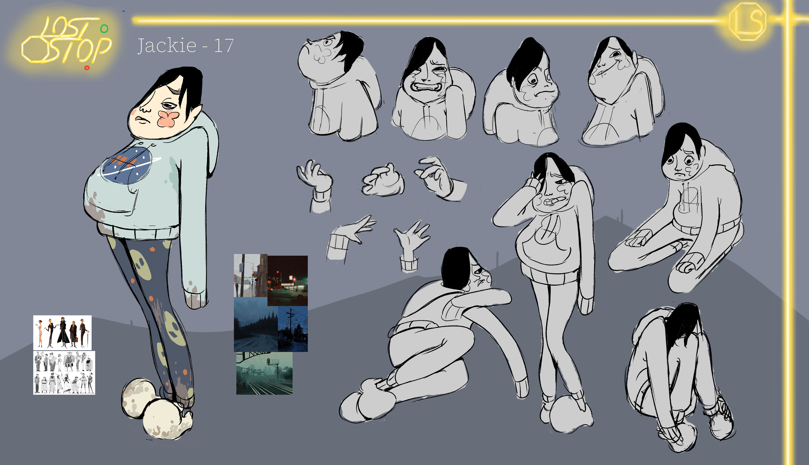
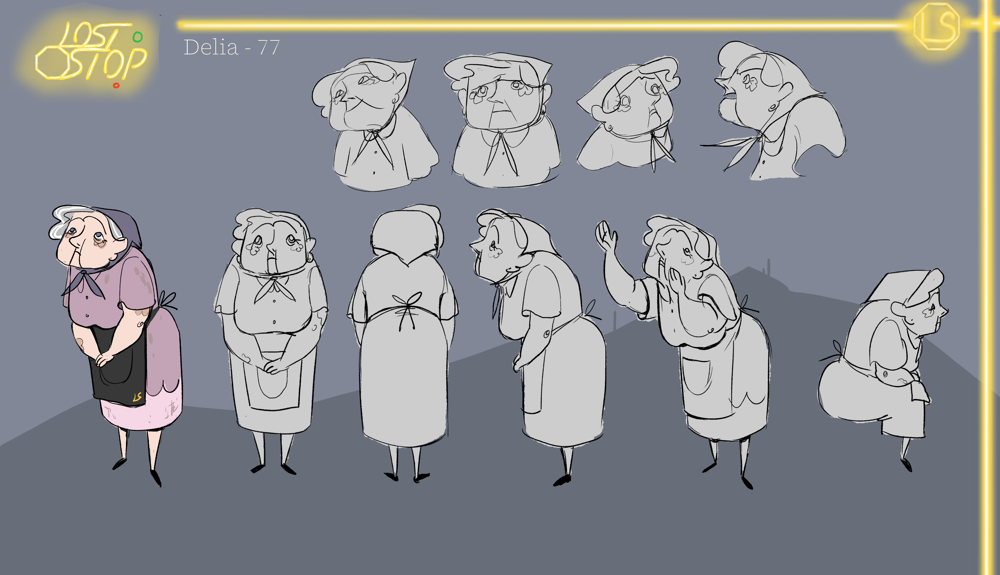
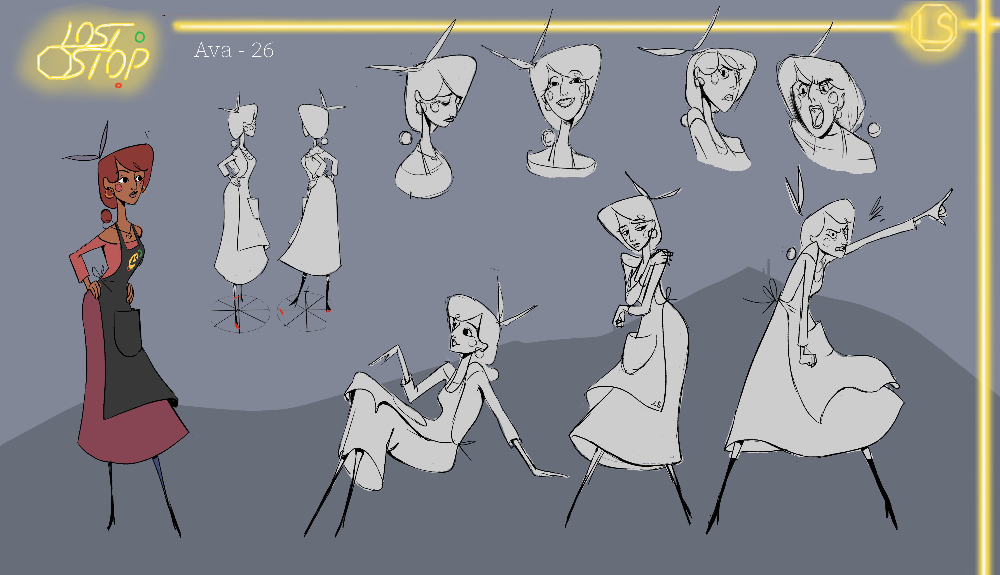
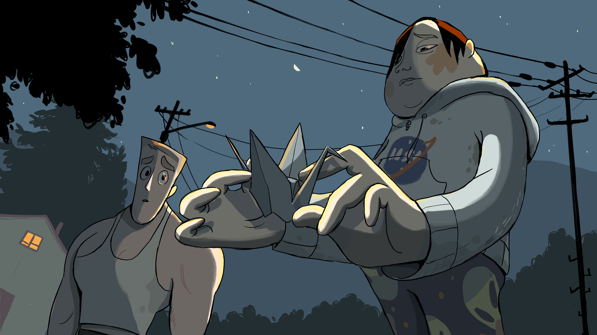

CONCEPT
The Lost Stop was made for my accepted CalArts application portfolio in 2024–2025. It follows a convenience store called The Lost Stop that only appears for those who are lost. The story explores themes of mental health, toxic masculinity, and forgiveness.


CHARACTERS

Jackie — 17
A high schooler who struggles with depression. Failing grades, a lack of friends, and parental apathy have left him with suicidal ideation.

Mitch — 29
Built his wealth through hard work, but neglects other important personal commitments, such as his relationship with his little sister.

Delia — 77
The Lost Stop's longest resident. She has experienced loneliness since her son died 18 years ago, and finds purpose in The Lost Stop.

Ava — 28
Found The Lost Stop after an emotionally abusive boyfriend left her isolated. She finds support through Delia.

KEYFRAMES


